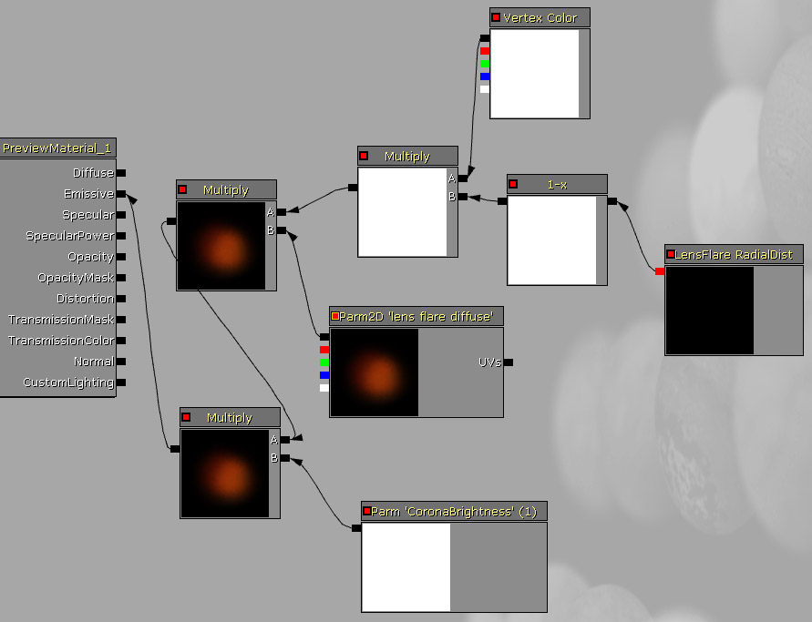
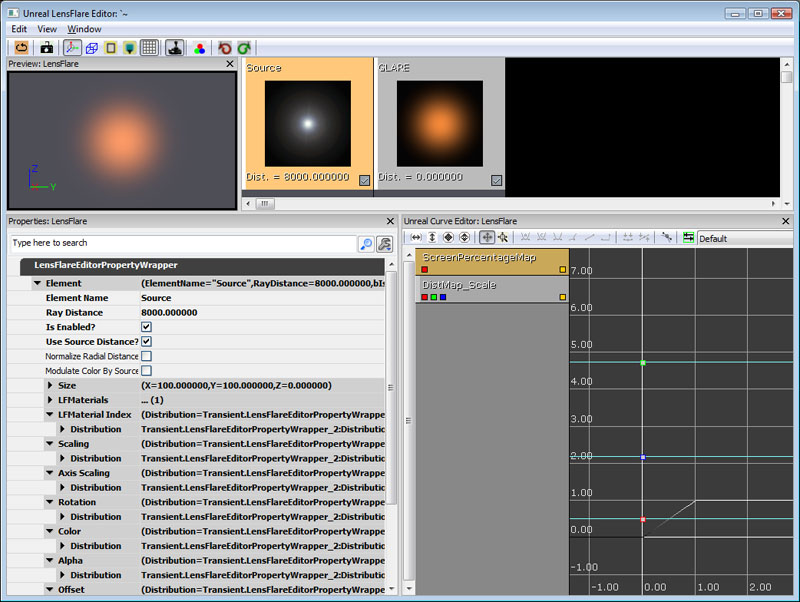

UDN
Search public documentation:
LensFlareEditorUserGuideCH
English Translation
日本語訳
한국어
Interested in the Unreal Engine?
Visit the Unreal Technology site.
Looking for jobs and company info?
Check out the Epic games site.
Questions about support via UDN?
Contact the UDN Staff
日本語訳
한국어
Interested in the Unreal Engine?
Visit the Unreal Technology site.
Looking for jobs and company info?
Check out the Epic games site.
Questions about support via UDN?
Contact the UDN Staff
镜头眩光编辑器用户指南
镜头眩光编辑器用户指南
概述
创建镜头眩光
RayDistance(光线距离) 的值。这个值在反射元素的属性中，同时也有很多其它值。
和 Source(源) 元素一样，存在一个 LFMaterials 插槽，它用于为反射元素添加材质。在这里，您可以在编辑器中缩放、旋转及重新着色反射元素或者源元素。这些功能分别对应着 AxisScaling(坐标轴缩放) 、 Rotation(旋转) 和 Color(颜色) 属性。
测试镜头眩光最好的方法是把它放置在游戏中您要使用的它的实际位置上，以便您可以在调整类似于反射元素的 raydistance 这样的属性时能够更好地感受应该使用哪个值。

镜头眩光编辑器布局

关联菜单
右击编辑器打开关联菜单：使用镜头眩光
| DistMap_Scale |
| DistMap_Color |
| DistMap_Alpha |
标准的镜头眩光
为了直接执行和镜头眩光相关的自定义函数，镜头眩光使用了从材质编辑器中传递回的特殊参数。这里是才直接点的详细介绍以及它们的用途： LensFlareRadialDist 这个节点和点积类似，当相机直接面向镜头眩光时它变亮，当镜头眩光接近屏幕(0-1)的边缘时它变暗。可以根据需要修改输出端。这可以使得您的镜头眩光元素随着向屏幕边缘的接近进行衰减或者改变值。 LensFlareOcclusion(镜头眩光遮挡) 返回镜头眩光被遮挡程度的近似值。这个计算基于镜头眩光的边界盒进行(右击镜头眩光编辑器的主窗口，并选择'Select Lens Flare[选择镜头眩光]来选择眩光的基本属性，从而可以对边界盒的大小进行设置')的，基于距离进行正确地缩放，以便您的值在所有的距离上都是有意义的。较大的边界盒意味着必须遮挡更多的眩光。这个结果和镜头眩光的参数ScreenPercentageMap进行交互作用。ScreenPercentageMap是一个映射着衰减值的曲线，因为它和遮挡量相关。这可以使得当有一小部分被遮挡或者有一小部分变得非常暗淡时光源仍然可以保持明亮。一般您会使它成为线性的倾斜下降，从而眩光可以基于遮挡逐渐地变暗。 Vertex Color(顶点颜色) 和其它的粒子类似，Vertex Color(顶点颜色)颜色从材质编辑器中传递到每个镜头眩光元素内。这允许您使用在镜头眩光actor的每个源和元素中设置的Color(颜色)和Alpha(透明度)值来直接地改变镜头眩光编辑器汇总的颜色和alpha值。 Radius(半径) Radius(半径)文本域可以应用到任何镜头眩光并且可以设置它周围的半径，在这个半径之外的眩光是不可见的。(这和点光源及聚光源类似。)定向镜头眩光
如果有一个使用椎体(比如手电筒头冠或者车前灯)的镜头眩光，那么这个眩光可以被认为是 定向 的。 为了设置一个椎体，右击镜头眩光编辑器的主窗口，并选择"Select Lens Flare(选择镜头眩光)"。这样便选择了镜头眩光actor的基本属性，您可以在这里设置Min(最小)和Max(最大)的衰减椎体(和UE3中的光照设置一样)以及控制距离的半径。然后如果您把您的镜头眩光放置到世界中并且选中它，那么您将可以在编辑器中看到显示的半径。 LensFlareIntensity(镜头眩光亮度) 对于定向镜头眩光来说，乘上这个参数将可以使得眩光基于椎体的视角进行衰减。随着眩光从相机开始指向远方，将会导致眩光的亮度平滑地下降。 这两个功能及其设置和聚光源的工作原理一样：- OuterCone(外锥角)
- 定向镜头眩光的外椎角。
- InnerCone(内锥角)
- 定向镜头眩光的内椎角。